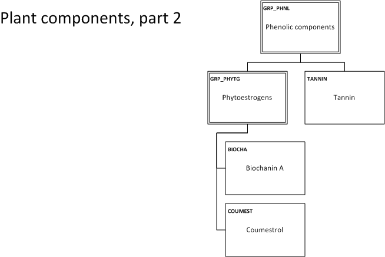

Plant Components¶
Taxonomy¶

Specific entries from ChEFS and ChEMATIC¶
ChEFS: proanthocyanidins class
ChEFS: (-)-epigallocatechin 3-gallate
ChEFS: theaflavin 3,3’ digallate
ChEFS: proanthocyanidins class
ChEFS: (-)-epigallocatechin 3-gallate
ChEFS: theaflavin 3,3’ digallate